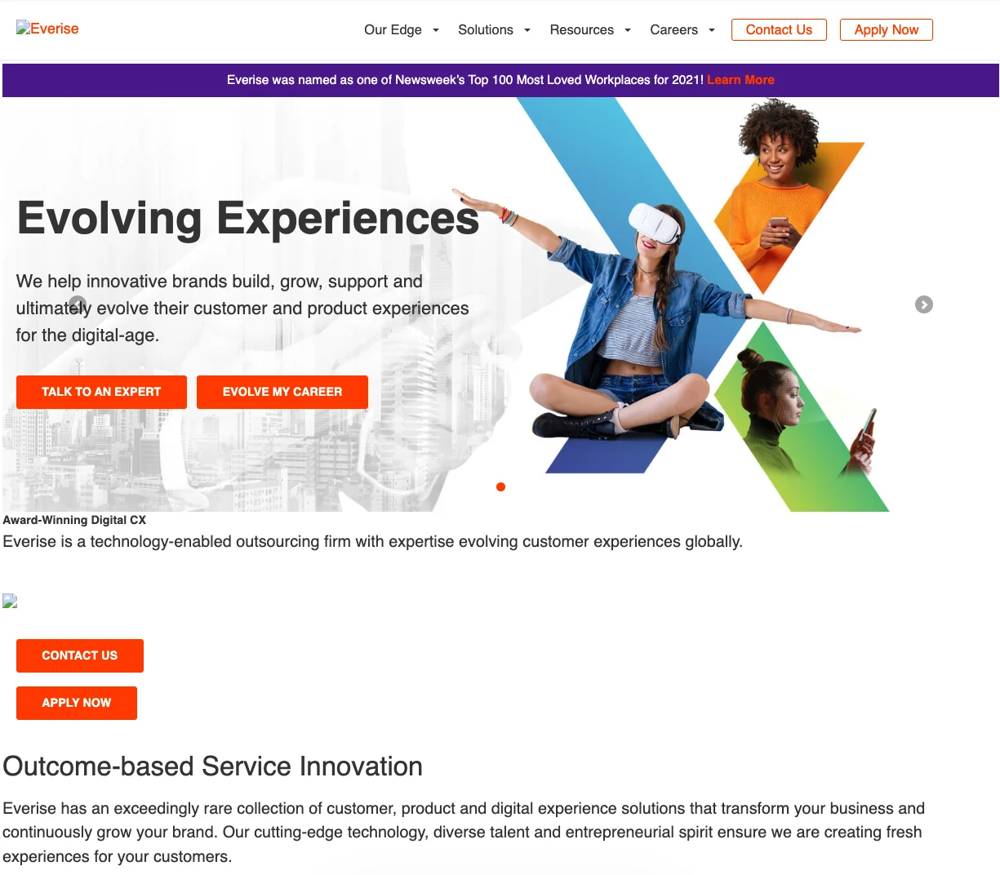
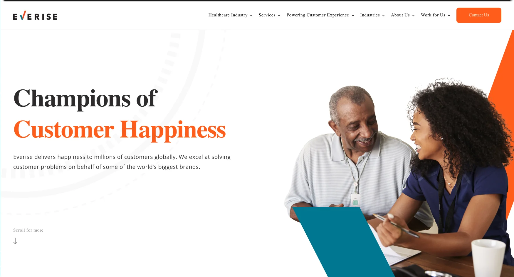

Everise: Website Rebuild.
A full information architecture restructure and site rebuild for a global CX company — shifting its digital presence from product-led to industry-led, and delivering measurable results within two months of launch.
A website working against itself.
Everise — a global customer experience company operating across six countries — had a 140-page website that buried its commercial story. Its navigation led with product categories. Healthcare, the most valuable vertical, sat three levels deep. Six calls to action competed above the fold.
The brief was to rebuild from the ground up: new information architecture, new design system, new WordPress build — with industry verticals brought to the surface and healthcare as the primary commercial priority.
Industry first.
Before design began, the existing site was mapped against seven competitor websites — TaskUs, Teleperformance, Concentrix, TDCX, Accenture, Convey Health Solutions, and Telus International.
The diagnostic was unambiguous. Every stronger competitor led with industry. Everise led with product. The IA restructure moved industry verticals — Healthcare, Insurance, Utilities, Travel & Hospitality, and Tax Preparation — into primary navigation and onto the homepage above the fold. The design followed the same logic: mobile-first, fewer competing CTAs, more breathing space between sections, and language written for buyers rather than internal teams.
Product verticals out. Industry verticals in.
140+ pages across 32 templates restructured around five industries. Healthcare brought from level 3 to homepage and primary navigation.
Mobile-first. One clear hierarchy.
WordPress build with a clean, white design system, reduced CTA count, and copy written in the language of each industry's buyers.
Two months. Measurable.
The rebuilt weareeverise.com launched in 2022. Both results came without additional media spend — the IA change alone moved the needle within the first two months.
